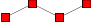

Appearence
Colors and mark shapes
Coefplots.jl uses Colors.jl to manage the coloring of the plots. Colors.jl supports a variety of colorspaces. Colors.jl also provides a wide variety of named colors to choose from, see here for more information.
The default color for Coefplot is the Julia logo blue. For MultiCoefplot and GroupedMultiCoefplot, Coefplots.jl iterates over Julia blue, Julia green, Julia red, Julia purple and restart if reaches the end.
Colorable components in Coefplots.jl are Mark, Bar. Color these objects simply by passing a Color to named arguments fill or draw (fill doesn't work for Bar).
The Mark object that gets passed to Coefplot.mark defines the style in which Coefplots.jl draw the point estimate, while Coefplot.errormark defines the the style of the endpoints of the confidence interval. The Bar object that gets passed to Coefplot.errorbar defines the style of the confidence interval, while Coefplot.connect defines the style of the line that connects consecutive coefficients if keepconnect is true.
The user can choose from a variety of mark shapes.
| mark | preview | mark | preview |
|---|---|---|---|
| mark="*" | mark="x" | ||
| mark="+" | mark="-" | ||
| mark="|" | mark="asterisk" | ||
| mark="star" | mark="10-pointed star" | ||
| mark="oplus" | mark="oplus*" | ||
| mark="otimes" | mark="otimes*" | ||
| mark="square" | mark="square*" |  | |
| mark="triangle" | mark="triangle*" | ||
| mark="diamond" | mark="diamond*" | ||
| mark="pentagon" | mark="pentagon*" | ||
| mark="halfcircle" | mark="halfcircle*" | ||
| mark="halfdiamond*" | mark="halfsquare*" | ||
| mark="halfsquare right*" | mark="halfsquare left*" | ||
| mark="Mercedes star" | mark="Mercedes star flipped" | ||
| mark="heart" | mark="ball" |  |
For example,
using Colors
coefplots_pool = parse(regression_result, mark=Mark(mark="heart", marksize=3, fill=colorant"salmon", draw=colorant"#FF0000"),
errorbar=Bar(linewidth=2, linetype=Symbol("densely dotted"), draw=colorant"lightsalmon"),
errormark=Mark(mark=:|, marksize=3.0, linewidth=0.8, linetype=:solid, draw=colorant"firebrick2"),
connect=Bar(draw=colorant"lightsalmon"),
keepconnect=true)
p = plot(coefplots_pool)Caption Styles
There are three elements about a caption that can be customized: font, size, and rotate. font dictates the font in which the caption is written in, size determines the font size, and rotate specifies the angle to which the caption is tilted. This can be useful when the caption is long but the intervals between captions are short.
coefplots_pool = parse(regression_result, xticklabel=CaptionStyle(font="phv",
size=10,
rotate=45))
p = plot(coefplots_pool)Fonts can be accessed with T1 encoding. To list all code installed, check out the documents that pops out after typing texdoc fontname in terminal. Its appendix provides a big list of available fonts.